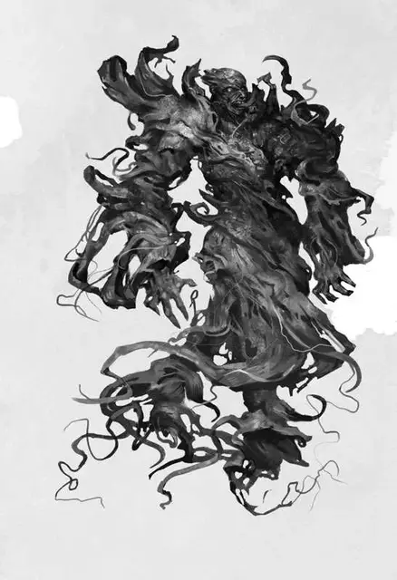

Аллип
Allip
Средняя Нежить, нейтрально-злая

Класс Доспеха 13
Хиты 40 (9к8)
Скорость 0 футов, летая 40 футов
| мод | спас | ||
|---|---|---|---|
| СИЛ | 6 | −2 | −2 |
| ЛОВ | 17 | +3 | +3 |
| ТЕЛ | 10 | +0 | +0 |
| мод | спас | ||
|---|---|---|---|
| ИНТ | 17 | +3 | +6 |
| МДР | 15 | +2 | +5 |
| ХАР | 16 | +3 | +3 |
Навыки Восприятие +5, Скрытность +6
Сопротивление урону звук, кислота, огонь, электричество; дробящий, колющий, рубящий от немагических атак
Иммунитет к урону некротическая энергия, холод, яд
Иммунитет к состояниям окаменение, опутанность, отравление, сбивание с ног, захват, паралич, очарование, испуг, истощение
Чувства тёмное зрение 60 футов, пассивное Восприятие 15
Языки все, известные при жизни
Опасность 5 (1800 опыта)
Бонус мастерства +3
Среда обитания Болото, Город
Особенности
Бестелесное перемещение. Аллип может перемещаться сквозь других существ и предметы, как если бы они были труднопроходимой местностью. Он получает 5 (1к10) урона силовым полем, если заканчивает ход внутри предмета.
Действия
Безумное касание. Рукопашная атака заклинанием: +6 на попадание, дистанция 5 футов одна цель. Попадание: 17 (4к6+3) урона психической энергией.
Шёпот безумия. Аллип выбирает до трёх существ которых он может видеть в пределах 60 футов от него. Каждая цель должна преуспеть в спасброске Мудрости Сл 14 или получить 7 (1к8+3) урона психической энергией и совершить реакцией рукопашную атаку оружием по одному существу по выбору аллипа и которое он видит. Конструкты и нежить невосприимчивы к этому эффекту.
Ошеломляющий вой (перезарядка 6). Каждое существо в пределах 30 футов от аллипа, которое может услышать его, должно совершить спасбросок Мудрости Сл 14. При провале цель получает 12 (2к8 + 3) урона психической энергией, и она ошеломлена до конца следующего хода. В случае успеха он получает вдвое меньше урона и не ошеломлён. Конструкты и нежить невосприимчивы к этому эффекту.
Описание
Когда кто-то узнаёт секрет, который был защищён могущественным существом при помощи проклятия,может появиться аллип. Секреты, защищённые таким образом, варьируются от истинного имени Лорда Демонов до скрытой сути космического порядка. Аллип знает секрет, но проклятие уничтожает его тело,оставляя только призрачное существо, сотканное из фрагментов души жертвы и переполняющей психической агонии.
Богохульные секреты. Каждого аллипа разрушает ужасающая правда, которая мучает остатки его разума. В присутствии других существ аллип старается облегчить свою ношу и поделиться своим секретом. Аллип может поделиться только фрагментом рокового знания, но и этой части достаточно,чтобы заставить получателя на время обезуметь. Выжившие после нападения аллипа иногда подвергаются импульсу узнать больше о том, что сказало это чудовище. Загадочные фразы отдаются эхом в их сознаниях, и странные видения замещают их сны. Ощущение того, что какое-то колоссальное знание находится совсем рядом, но они просто не могут его вспомнить мучает их днями, месяцами и иногда даже годами после встречи.
Коварные знания. Аллип может попытаться поделиться своим знанием, чтобы избавиться от проклятия и перейти в посмертие. Аллип может передать знание из своего разума другому существу, заставив его записать всё, что аллип знает. Процесс занимает дни и даже недели. Аллип может достигнуть своей задачи скрываясь в кабинете или мастерской учёного. Если аллип остаётся незамеченным, его жертва переполняется маниакальной энергией. Учёный, которого неожиданные прозрения заставляют работать день и ночь, создаёт целые манускрипты текста, не помня, о чём конкретно он писал. Если аллип преуспевает, то он уходит из мира, и его ужасающий секрет прячется где-то в глубине записей учёного, пока его не обнаружит следующая жертва.
Природа нежити. Аллипу не нужен воздух, еда, питьё или сон.